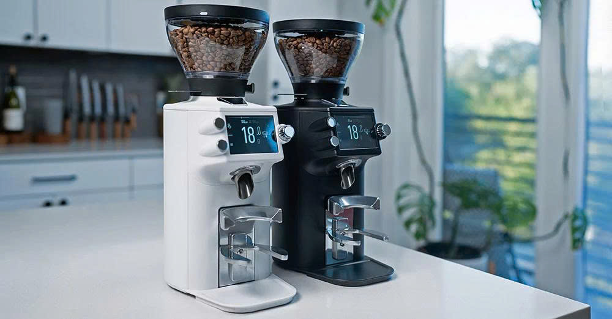

The King is Coming Home.
Từ 26.800.000₫ — Giá tăng mỗi ngày
Sản phẩm
Máy xay espresso cho gia đình, mang công nghệ xay chuyên nghiệp Grind-by-Weight & Grind-by-Sync vào không gian bếp của bạn.
Video giới thiệu
Trải nghiệm chi tiết sản phẩm qua video từ Mahlkönig.
Về thương hiệu
Vị vua luôn tạo ra xu thế và dẫn dắt thị trường máy xay cà phê toàn cầu.
Mahlkönig — dịch từ tiếng Đức có nghĩa là "Vua Xay" — không chỉ là thương hiệu, mà là chuẩn mực của ngành cà phê chuyên nghiệp suốt hơn 100 năm. Từ các quán specialty coffee hàng đầu thế giới cho đến giải vô địch World Barista Championship, Mahlkönig luôn là lựa chọn số 1. Giờ đây, với E64 WS, lần đầu tiên 2 công nghệ hot trend — Grind-by-Weight & Grind-by-Sync — được tích hợp trong một chiếc máy dành cho gia đình, đưa đẳng cấp chuyên nghiệp về không gian bếp của bạn.
Giá tăng mỗi ngày
Giá khởi điểm 26.800.000₫ trong tháng 4. Từ 01/05, giá tăng 100.000₫ mỗi ngày cho đến khi đạt mức 29.800.000₫.
Tính năng
2 công nghệ hot trend được tích hợp trong 1 chiếc máy — lần đầu tiên dành cho gia đình.
Xay theo trọng lượng với độ chính xác lên đến 0.1g, đảm bảo định lượng ổn định cho mỗi shot espresso.
Kết nối với các thiết bị cà phê thông minh, tự động điều chỉnh độ xay phù hợp với quá trình chiết xuất.
Công nghệ Disc Distance Detection độc quyền — đo khoảng cách lưỡi xay theo micron, vốn chỉ dùng trên dòng chuyên nghiệp.
Không cần dụng cụ, thao tác trực tiếp theo hướng dẫn trên màn hình. Hỗ trợ dial-in từng bước cho công thức espresso.
Cho phép nhập thời gian chiết xuất từ máy pha để tự động điều chỉnh độ xay, đảm bảo giữ đúng công thức mong muốn.
Kết nối với các thiết bị tương thích, theo dõi tần suất sử dụng và cập nhật phần mềm tự động qua ứng dụng di động.
Thiết kế & Công nghệ
Nhỏ gọn, mạnh mẽ, yên tĩnh — E64 WS mang cả quán cà phê chuyên nghiệp vào bếp nhà bạn.
Kích thước hạt đồng đều, nâng cao chất lượng chiết xuất và hương vị trong mỗi shot.
Tối thiểu 3g/giây cho espresso, pha nhanh hơn mà vẫn giữ chất lượng.
Giảm thiểu tiếng ồn, phù hợp sử dụng buổi sáng sớm trong không gian gia đình.
Tiết kiệm diện tích, linh hoạt cho nhiều không gian setup — mang theo bất cứ đâu.
So sánh giá
E64 WS đang được bán trên thị trường quốc tế với mức giá tham chiếu như sau:
Chi tiết
| Loại máy | Máy xay espresso gia đình |
| Lưỡi xay | Thép 64mm phẳng (flat burr) |
| Công nghệ xay | Grind-by-Weight (0.1g) & Grind-by-Sync |
| Chỉnh độ xay | Điện tử — Disc Distance Detection (DDD), đo micron |
| Tốc độ xay | ≥ 3 g/giây (espresso) |
| Trọng lượng | 8.5 kg |
| Điện áp | 220–240V / 50–60Hz / 200W |
| Màu sắc | Matte Black / Matte White |
| Kết nối | Mahlkönig Sync App (iOS & Android) |
| Cân chỉnh Zero | Không cần dụng cụ, hướng dẫn trên màn hình |
| Hỗ trợ Dial-in | Hướng dẫn từng bước trên màn hình |
| Brew Time Input | Nhập thời gian chiết xuất, tự động điều chỉnh |
Đặt hàng
Liên hệ ngay để giữ mức giá tốt nhất hôm nay.
Hàng order, thời gian giao từ 30–45 ngày làm việc.